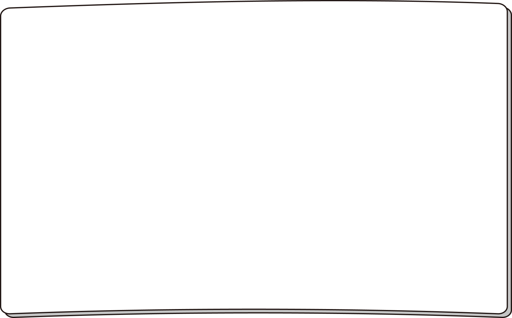

이해 활동
이해 활동
3 다음은 이야기 밖의 서술자를 설정하여 이 소설의 일부를 바꾸어 쓴 것이다. 서술자가 바뀌면서 어떤 점이 달라졌는지 이야기해 보자.

점순이는 요즘 순돌이를 보면 자꾸 마음이 설레고 웃음이 났다. 그저 여러 동네 아이들 중 한 명이었을 뿐인데, 어느 순간부터 순돌이가 점순이의 마음에 쏙 들어와 버렸다. 하지만 무뚝뚝하고 어리숙한 순돌이는 점순이의 그런 마음을 도통 알지 못했다.
어느 날이었다. 점순이는 알이 굵은 감자를 골라 정성껏 삶았다. 누가 볼세라 감자를 치마폭에 숨기고 울타리를 엮고 있는 순돌이에게 살금살금 다가갔다.
“얘, 너 혼자만 일하니?”
순돌이는 평소 서로 말도 안 섞던 점순이가 웬일인가 싶어
“그럼 혼자 하지 떼루 하디?”
하고 내뱉었다.
점순이는 부아가 살짝 나려는 것을 꾹 참고 계속 말을 걸었다.
“너 일하기 좋니?”
“한여름이나 되거든 하지 벌써 울타리를 하니?”
그러다가 혼자 제풀에 까르르 웃음을 터뜨렸다. 순돌이는 어이가 없었다. 별로 우스울 것도 없는데 혼자서 저렇게 깔깔거리다니 점순이가 미친 것 아닌가 싶었다.
- ‘나’와 점순이의 심리가 모두 직접적으로 드러나 있다.
- 점순이의 속마음을 모르는 ‘나’의 심리만 제시되었을 때 느낄 수 있는 재미는 줄어든다.